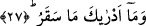
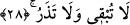
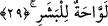

İster sakar onun misli olup içine giren aynı şiddette karşılaşmış olsun isterse saud
cehennemde bir dağın adı olsun farketmez. Çünkü sekar bunların her ikisini de içine
almakta kapsamaktadır.
27. Sen biliyor musun sekar nedir?
“Sen sekar’ın ne olduğunu bilirmisin?” Bunun anlamı; sekar’ın hangi vasıfta
olduğunu sana bildiren şey nedir? demektir. Bir başka ifâdeyle sekarın mâhiyeti
akılların kavrama kapasitesinin dışındadır. Bu ifâde sekar’ın durumunu tâzim
etmektedir.
28. Hem (bütün bedeni helâk eder, hiçbir şey) bırakmaz, hem (eski hâle getirip
tekrar azap etmekten) vazgeçmez o.
“Hem bırakmaz hem vazgeçmez o” Bu ifâde yine sekarın vasfını ve hâlini beyân
etmektedir. Ayrıca aynı içinde zımnen bulunan ve kendini gösteren vaadi yerine getirme
anlamına gelir. Sekar’ın ne olduğunu sen bilir misin? Sekar içine atılan herşeyi yakmak
sûretiyle helâk eder, helâk edince de helâk olmuş olarak bırakmaz. Tâ ki helâk olan o
şey yeni bir yaratılışla eski hâline gelir. Bu sefer sekar onu ikinci kez yeniden helâk
eder ve böylece bir döngü sürüp gider. Nitekim bu sekar’ın işleyişi tıpkı şu âyet-i
kerîmede Allah’ın belirttiğine benzemektedir: “Şüphesiz âyetlerimizi inkâr edenleri
gün gelecek bir ateşe sokacağız; onların derileri pişip acı duymaz hâle geldikçe,
derilerini başka derilerle değiştiririz ki acıyı duysunlar.” (en-Nisa, 4/56)
Âyetteki “lâ tubkî” ifâdesine, ”hiçbir şeye acımaz” anlamını vermek de mümkündür.
Buna göre âyetin mânâsı; sekar içerisine atılan hiçbir şeye merhamet etmez, onu helâk
etmemiş bırakmaz. Tam aksine içine atılan herşey kesin olarak yok olmuş demektir.
Çünkü sekar, Cebbar olan Allah’ın gazabından yaratılmıştır.
Bâzı âlimlere göre de âyetin mânâsı; sekar hiçbir şeyi canlı bırakmaz, ölü de
bırakmaz şeklindedir. Bu tıpkı Allah’ın; “Şurası muhakkakki kim Rabbine günahkâr
olarak varırsa, cehennem sırf onun içindir. O ise orada ne ölür ne de yaşar!” (Tâhâ,
20/74) âyet-i kerîmesine benzemektedir.